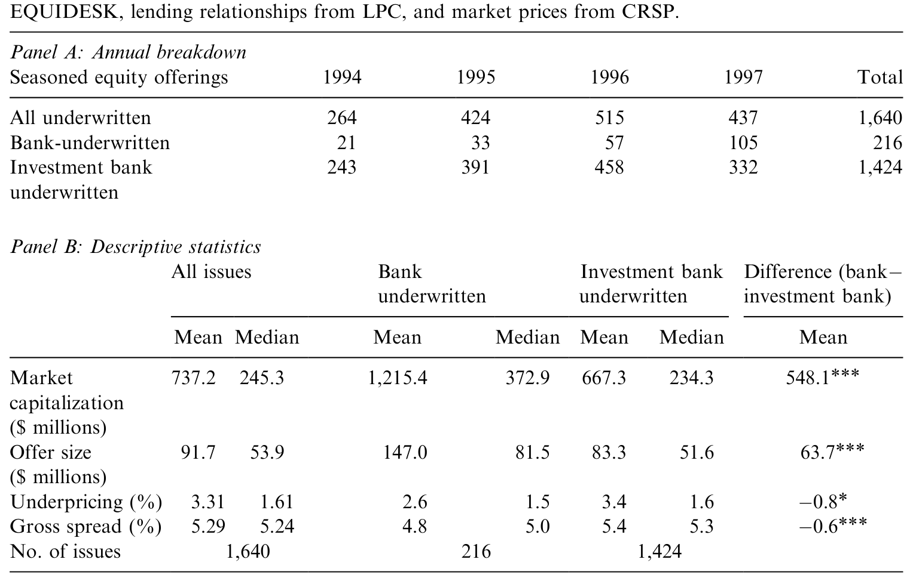
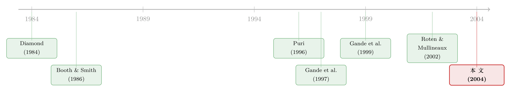

把别人的招牌借来用：银行重返承销业的一道「联名」生意
本文读的是 Narayanan, Rangan & Rangan (2004, Journal of Financial Economics)：当一家给企业放过贷的银行又来承销它的股票时，市场会担心「利益冲突」。这篇论文发现，放贷银行解决信任问题的办法，不是自己单干，而是拉一家声誉高、又跟发行人没有借贷关系的独立投行来当主承销商，自己退居「副承销」（comanager）。靠这套「联名」的辛迪加结构，放贷银行既借到了对方的声誉给自己的证券「背书」，又把自己的私有信息变成更低的发行费，转手让利给了发债企业。
1 一个被怀疑的「双重身份」
先讲一个让监管者睡不着觉的场景。
一家银行给某家公司放了贷款。放贷的过程里，银行做了别人做不了的事——事前筛选 (ex-ante screening)、事后监督 (ex-post monitoring)，于是它握着一手关于这家公司的私有信息 (proprietary information)。Fama (1985)、Diamond (1984) 说银行的「特殊」正在于此。
现在，这家公司要增发股票了。如果让这家银行来当承销商，会发生什么？
往好处想：银行比谁都了解这家公司，它的「认证 (certification)」应该更可信，能帮公司把证券卖出好价钱。这是认证效应 (certification effect)。
但往坏处想呢？银行手里那笔贷款还没收回。万一它私下发现这家公司其实在变差，它会不会昧着良心、把一只烂证券硬塞给投资者，好用募来的钱替自己把贷款先还上？这就是利益冲突 (conflict of interest)——也正是 1933 年 Glass-Steagall 法案当年要把商业银行和投行业务一刀切开的理由。
这两种效应方向正好相反。投资者是理性的：他们会掂量这两股力量谁更强，然后给银行承销的每一只证券相应地定价（Booth and Smith, 1986）。所以「哪种效应占上风」就成了一道可以拿数据来回答的实证题。
接着，一个自然的问题是：实证证据到底站哪边？
过往的天平，整体上倒向了「认证」。无论是 Glass-Steagall 之前的历史样本（Ang and Richardson, 1994; Puri, 1996），还是把利益冲突风险控制住之后的现代样本，证据大多显示银行承销的证券质量更高、定价更好、违约更少（Kroszner and Rajan, 1994; Puri, 1994）。Gande et al. (1997) 更进一步：当利益冲突的风险低、信息又敏感时，投资者愿意为银行承销付更高的价。
可这就留下了一个真正有意思的缺口——
既然「认证」会占上风，那放贷银行究竟是用什么具体的办法，把投资者对「利益冲突」的疑虑给摁下去的？
这正是本文要钻进去的那一步。作者的答案，不在于「价格」，而在于一个长期被忽略的东西：承销辛迪加的结构 (syndicate structure)。
2 关键的一步：把主承销的位子让出去
要理解这篇论文的核心，得先看懂一桩承销是怎么分工的。
一笔股票发行，先要选一个主承销商 (lead manager)。主承销组建辛迪加、分配份额、「管账本」，地位最高，通常能拿走整笔承销总价差 (gross spread) 里 20% 的管理费。1990 年代增发的 gross spread 普遍在募资额的 4.5%–6.5%（Chen and Ritter, 2000）。除了主承销，还有一圈副承销商 (comanager)，跟主承销一起做尽职调查、报材料、谈条款，分一杯管理费的羹。
最关键的一点是：给证券「背书」的，是主承销商（Booth and Smith, 1986）。主承销的声誉押在这单生意上。
于是真正巧妙的一步出现了。放贷银行如果自己去当主承销，它的「双重身份」会被投资者狐疑地盯着；可如果它主动把主承销的位子让给一家声誉高、并且跟这家发行人没有任何借贷关系的独立投行，自己只当副承销——情况就翻转了：
- 现在押声誉「作保」的，是那家独立主承销。它跟发行人没有贷款瓜葛，没有动机去坑投资者，它的声誉就成了对「不占投资者便宜」的可信承诺 (credible commitment)。
- 而放贷银行虽然退居副承销，却没有丢掉自己的成本优势——它那手私有信息照样能压低这单生意的总发行成本。
- 独立主承销也乐意：白得一单生意、一份费用、一次曝光。
作者给这套打法起了个绝妙的名字：联名 (cobranding)。银行自己在承销市场上还没攒下能给「信息敏感型证券」背书的品牌，那就干脆租用市场上老牌玩家的品牌——跟它「联名」，借它的招牌来给自己的证券取信于市场。
这就是全文反复要讲透的那一个核心：放贷银行不是靠「自证清白」，而是靠结构性地把背书权交给一个无利害关系的高声誉第三方，来一次性解决信任问题。剩下的所有实证，都是在替这个故事找证据。
（关于「声誉本身如何成为承销资格的入场券」，可参见《没有招牌的新人，凭什么让你把发债的活儿交给他？》；关于承销中的认证角色，亦可参见《「认证」的反面：原来风投把新股「打折」得更狠》。）
3 数据：一个「故意」放大了放贷银行的样本
要检验这个故事，作者需要足够多的「放贷银行承销」案例。这里有个现实的麻烦。
Glass-Steagall 的松绑分步走：1987 年先允许 Section 20 子公司承销 MBS/ABS，1989 年放开公司债，1990 年才放开公司股票；收入上限从 5% 一路松到 1989 年的 10%、1996 年的 25%，到 1999 年 Gramm-Leach-Bliley 法案干脆把 Glass-Steagall 废了。但银行真正打进股票承销市场要等到 1994 年之后。
问题是 IPO 太稀。1994–1997 年间银行承销的 IPO 有 157 单，其中放贷银行承销的只有 16 单（1 单主承、15 单副承）。样本太小，没法做任何像样的统计。
作者于是退而求其次，把样本从 IPO 换成增发 (seasoned equity offering, SEO)——同样是信息敏感的股权发行，但放贷银行参与的案例多得多，足以支撑检验。这是一个聪明的取舍。
具体的样本搭建是这样的：
- 发行信息（日期、发行人、辛迪加结构、发行条款）来自 Dealogic 旗下的
Equidesk数据库，1994–1997 年全部firm-commitment 增发，初始2,317单。 - 剔除非美国公司、封闭式基金、REITs、金融公司、公用事业、ADR 与 unit offerings 之后，剩
1,640单 SEO。 - 用美联储提供的 Section 20 子公司及其母银行控股公司名单做分类：只要有一家 Section 20 子公司担任主承销或副承销，就算「银行承销」——共
216单；其余1,424单为「投行承销 (investment bank-underwritten)」。 - 借贷关系来自 Loan Pricing Corporation 的
Dealscan：如果 Section 20 承销商的母行在发行登记日还活跃地参与着发行人的任何一笔贷款，就算「放贷银行 (lending bank)」承销。 - 市场价格来自
CRSP。
先看一眼描述统计，它已经把后面的故事剧透了一半。

Table 1
如表 1 所示：银行承销的发行人更大（市值均值 $1,215.4M vs 投行的 $667.3M，差额 $548.1M，1% 显著），发行规模也更大（$147.0M vs $83.3M，1% 显著）。这跟债券市场恰恰相反——Gande et al. (1997) 发现债市里银行更多承销的是小额发行。一个可能的解释是：股权的信息敏感度更高，银行索性挑大公司、大发行下手，因为大公司的信息不对称问题本就更轻。
更要紧的是最后两行：承销价差 (gross spread) 上，银行明显更便宜（均值 4.8% vs 5.4%，中位数 5.0% vs 5.3%，均在 1% 显著）；而抑价 (underpricing) 上，银行 2.6% vs 投行 3.4%，均值差 -0.8% 只在 10% 显著、中位数无差异。
这一表就摆出了全文的两条腿：价格上银行没占到便宜（或只占很小便宜），但发行费上银行更省。后面两节就是把这两条腿各自钉死。
4 第一条证据：放贷银行确实在「联名」
故事的第一步，是要证明放贷银行真的偏好当副承销、并且真的去找高声誉的独立主承销联名。
先看辛迪加角色的分布。216 单银行承销里，银行当主承销的约 38%（81 单），当副承销的约 69%（148 单）。把样本按有无借贷关系切开后，对比更刺眼：
- 银行有借贷关系的 47 单里，有 38 单（
81%）银行只当副承销； - 银行没有借贷关系的 182 单里，只有 110 单（
61%）当副承销。
作者用三种方式把这个差异钉死。
第一，比例同质性检验。 对「副承销/主承销」的角色比例，放贷银行 vs 非放贷银行，卡方 (chi-squared) 统计量是 6.8，超过临界值——放贷银行更偏好副承销的角色，在统计上成立。
第二，logit 回归。 控制住其他影响主承销选择的因素后，「是否存在借贷关系」依然是「放贷银行选择副承销」的显著决定因素。换句话说，不是大公司碰巧爱用副承销结构，而是借贷关系本身在驱动这套打法。
第三，主承销的声誉。 这一步最贴合「联名」的故事：放贷银行去联名的那些主承销，其声誉（用承销市场份额衡量）比非放贷银行联名的对象高出约 2%。更直白的一个数字——市场上最顶尖的五家承销商，主承销了放贷银行副承销发行的 61%；而它们只主承销了非放贷银行副承销发行的 37%。
把三条合起来：放贷银行不仅爱当副承销，而且专挑高声誉的独立主承销来联名。这正是「租招牌」的实证指纹。
这里有个识别上的细节值得记一笔：作者本想检验「发行目的就是为了还承销行自己贷款」这种最尖锐的利益冲突，但在整个样本里只找到 1 单这样的发行。利益冲突最赤裸的版本，在数据里几乎是空的——这一点我们在评论里再回头算账。
5 第二条证据：声誉真的「兑」成了可信认证
接下来，一个自然的问题是：联名借来的声誉，真的管用吗？
检验的办法是看价格。作者把银行发行和投行发行的定价放在一起比，得到一组很干净的对照：
- 放贷银行副承销的发行，定价跟投行承销的发行没有差别——这说明独立主承销的声誉与独立性，给放贷银行的发行提供了可信的认证，投资者不再因「利益冲突」而压价。
- 放贷银行主承销的发行，定价反而低于投行承销——也就是说，一旦放贷银行自己跳到台前当主承销，投资者就开始打折扣了。
这一正一反，恰恰把「联名」的因果讲圆了：把背书权交给独立主承销，利益冲突的疑虑就被抹平；自己抢主承销的位子，疑虑就回来了。
诚实地说，「放贷银行主承销」这一组样本太小（毕竟绝大多数放贷银行都选择了副承销），作者自己也强调不能据此做强推广。这组对照更像一个方向一致的旁证，而非铁证。
6 第三条证据：省下来的钱，让给了企业
最后一步，也是把整个故事落地的一步：联名不只是为了取信，更是为了省钱，而且省下的钱让给了发债企业。
总发行成本可以拆成两块——抑价加承销价差：
$$\text{Total Issuance Cost} = \text{Underpricing} + \text{Gross Spread}$$
前面已经看到，价格（抑价）这一头，放贷银行联名的发行跟投行没差别。那省的钱只能来自另一头——gross spread。
作者发现：借贷关系的存在，会压低银行承销相对投行承销的 gross spread。而放贷银行副承销 vs 那一小撮放贷银行主承销的发行，价差没有差别——也就是说，省费用并不要求银行去抢主承销，副承销照样省。
把抑价和价差合起来：当放贷银行联名承销时，它在不牺牲认证可信度的前提下，降低了贷款客户的总发行成本。银行那手私有信息的价值，最终没有变成「卖更高的价」，而是变成了「收更低的费」，原封不动地让利给了发债企业。
这也顺手补上了文献的一块拼图：过去关于银行承销的证据几乎都来自债券市场，而本文用股权市场的证据告诉我们——在信息敏感度更高的股权发行里，银行的信息优势主要通过承销费而非价格传导给企业。
7 文献脉络
把这条线捋一捋，能看清这篇论文站在哪。
最上游是「银行为什么特殊」的理论——Diamond (1984) 的委托监督、Fama (1985) 的「银行有什么不同」，奠定了「银行通过放贷生产私有信息」的根基；James (1987)、Lummer and McConnell (1989) 用贷款公告的正向股价反应，给「银行的独特性」补上了实证。
中游是「认证假说」与 Glass-Steagall 之争。Booth and Smith (1986) 把承销商的认证角色理论化；Ang and Richardson (1994)、Puri (1996)、Kroszner and Rajan (1994) 用 Glass-Steagall 之前的历史样本，发现银行承销的证券质量更高、定价更好，认证效应占上风。

到了现代样本，Gande et al. (1997) 用 Section 20 时代的数据确认：在利益冲突风险低、信息敏感的发行上，投资者愿为银行承销付溢价；Gande et al. (1999) 描绘了银行进入承销市场、加剧竞争的总体图景；Puri (1999) 则把镜头对准「上市过程」。Roten and Mullineaux (2002) 用更细的债券数据发现，平均而言银行与投行承销在定价上并无系统差异。
本文 (2004) 的位置就清楚了：前人争的是「认证还是利益冲突，谁占上风」，本文换了个问法——给定认证占上风，银行到底用什么机制做到的？答案是辛迪加结构这个一直被忽略的制度变量，并且把战场从债券拓展到了股权。
8 评论与延伸（Q&A + 研究方向）
(a) 几个可能的疑问
Q：「联名」会不会只是大公司本来就爱用多承销商的辛迪加，跟借贷关系无关？
作者用 logit 回归正面回应了这一点：在控制了影响主承销选择的其它因素之后，「是否存在借贷关系」依然显著地预测「放贷银行当副承销」。所以驱动力是借贷关系本身，而非单纯的发行规模或公司大小。当然，logit 的控制变量集是否足够干净，仍可商榷。
Q：定价「没有差别」是好消息还是坏消息？怎么就成了认证可信的证据？
关键在对照。如果利益冲突主导，放贷银行的发行应当被投资者压价；可放贷银行副承销的发行跟投行发行价格无异，而放贷银行主承销的发行反被打折。「联名时无折价、单干时有折价」这个反差，才是认证可信的证据，而不是「无差别」本身。
Q：那个只有 1 单「发行目的是还承销行贷款」的事实，会不会反而削弱了利益冲突的前提？
是个公允的担忧。最尖锐的利益冲突（拿募资还自己的贷款）在样本里几乎不存在，这既可能说明银行主动回避了最敏感的交易（与「可信承诺」的故事一致），也可能说明本文检验的「利益冲突」本就偏温和。两种解读都站得住，数据无法在此区分。
Q：股权市场的发现，能照搬到公司债市场吗？
不能直接照搬。作者自己指出，股权与债券的方向相反：债市里银行更多承销小额发行（Gande et al., 1997），股市里银行专挑大公司。本文的贡献恰恰在于补上股权这一侧，并指出股权里信息优势走的是「费用」而非「价格」这条渠道。
Q：用增发 (SEO) 替代 IPO，会不会换掉了最该研究的对象？
这是为了样本量不得已的取舍。IPO 信息最不对称、认证最该值钱，但放贷银行 IPO 只有 16 单。换成 SEO 牺牲了一部分外部有效性——SEO 已有公开价格，认证的边际价值天然更低，这意味着本文很可能低估了联名在 IPO 中的作用。
Q：样本只覆盖 1994–1997，结论还适用于今天的全能银行吗？
需要谨慎。这是 Section 20 子公司受收入上限和防火墙约束的特殊过渡期。1999 年 Gramm-Leach-Bliley 之后，银行可以自建承销品牌、内部交叉补贴，「租招牌」的必要性可能下降。本文刻画的是一个制度窗口里的策略，而非永恒规律。
(b) 几个可能的研究问题与提案
1. 把「联名」搬到公司债的一级市场。
【经济故事】债券市场比股权更依赖承销商对信用质量的认证，放贷银行的利益冲突也更直接（债主既放贷又承销）。「联名」机制在债市是否同样存在、声誉溢价是否更大？ 【可行性】高。Mergent FISD + Dealscan + TRACE 可同时拿到债券发行的辛迪加结构、借贷关系与二级流动性，样本远比 1994–1997 的 SEO 充裕，识别可沿用本文的 logit + 价差回归框架。
2. 用 Gramm-Leach-Bliley 做一次准自然实验。
【经济故事】1999 年废除 Glass-Steagall 让银行能自建承销品牌。如果「联名」是声誉缺位下的次优解，那么随着银行自身承销声誉积累，它们对独立主承销的依赖应当逐年下降。 【可行性】中。需要跨越制度断点的长面板，并把「银行自身声誉的积累」量化为承销市场份额的时间序列；难点在于同期承销市场结构本身也在剧变，需要分离两股力量。
3. 联名的「省费」最终落到谁头上？
【经济故事】本文说省下的 gross spread 让给了发债企业，但企业、放贷银行、独立主承销三方如何分这块蛋糕，并未拆开。借贷关系强弱、议价能力差异，可能决定让利的比例。 【可行性】中。需要把单笔发行的费用在辛迪加成员间的分配数据接进来（Dealogic 的费用拆分字段或招股书披露），识别上可借贷款规模、关系久期作为议价能力的代理。
4. 外资承销商当「独立主承销」的角色。
【经济故事】本文的高声誉独立主承销里有不少是外资投行（如 Deutsche Morgan Grenfell、CIBC）。当本土放贷银行联名外资主承销时，跨境声誉的「可信度」是否更高？外资持有人/中介在信息敏感发行里的认证价值，是一个天然的延伸。 【可行性】中。可用承销商母公司国籍给辛迪加打标签，结合 Equidesk/FISD 做横截面比较；难点是外资承销商的选择本身可能与发行人特征内生。
9 我的判断
这篇论文最漂亮的地方，是把一个看似无解的「双重身份」难题，归结到一个可观察、可统计的制度变量上——辛迪加里谁当主承、谁当副承。它没有诉诸花哨的模型，而是用「比例检验 + logit + 价差/定价对照」一层层把「联名取信、副承省费」的故事钉实，叙事干净，机制清楚，「cobranding」这个隐喻也确实抓住了要害。补上股权市场这块拼图、并指出信息优势走「费用」而非「价格」渠道，是扎实的边际贡献。
但识别上有三点我会保留。其一，自选择贯穿全文：放贷银行选择联名、发行人选择放贷银行、独立投行选择接单，三重选择叠在一起，logit 控制变量再多也难说穷尽，「联名」与「低成本」之间究竟有多少是因果、多少是匹配，本文给不出工具变量级的答案。其二，样本太薄太特殊：47 单放贷银行发行、其中主承销寥寥几单、利益冲突最尖锐的版本只有 1 单，许多对照本质上是小样本旁证，外推到今天的全能银行要十分小心。其三，价格无差异这一核心证据是个「零结果」，它依赖于配对样本（发行人规模、风险）足够可比，否则「无差异」也可能来自匹配不够干净。
后续我最想看到的，是把这套机制放进一个有费用拆分、有二级市场价格、横跨制度断点的更大债券样本里重做一遍——既检验「联名」是否稳健，也看看 1999 年之后这套「租招牌」的策略是不是真的随着银行自建品牌而退潮。如果退潮了，本文就更像一张特定窗口的快照；如果没退潮，那它揭示的就是承销市场里一条更深的声誉逻辑。
参考文献
- Ang, J., Richardson, T. (1994). The underwriting experience of commercial bank affiliates prior to the Glass-Steagall Act: a re-examination of evidence for passage of the act. Journal of Banking and Finance 18, 351–395.
- Booth, J.R., Smith, R.L. (1986). Capital raising, underwriting, and the certification hypothesis. Journal of Financial Economics 15, 261–281.
- Chen, H., Ritter, J. (2000). The seven percent solution. Journal of Finance 55, 1105–1132.
- Diamond, D.W. (1984). Financial intermediation and delegated monitoring. The Review of Economic Studies 51, 393–414.
- Fama, E. (1985). What's different about banks? Journal of Monetary Economics 10, 29–36.
- Gande, A., Puri, M., Saunders, A., Walter, I. (1997). Bank underwriting of debt securities: modern evidence. Review of Financial Studies 10, 1175–1202.
- Gande, A., Puri, M., Saunders, A. (1999). Bank entry, competition, and the market for corporate securities underwriting. Journal of Financial Economics 54, 165–195.
- James, C. (1987). Some evidence on the uniqueness of bank loans. Journal of Financial Economics 19, 217–235.
- Kroszner, R., Rajan, R. (1994). Is the Glass-Steagall Act justified? A study of the U.S. experience with universal banking before 1933. American Economic Review 84, 810–832.
- Lummer, S.L., McConnell, J.J. (1989). Further evidence on the bank lending process and the capital market response to bank loan agreements. Journal of Financial Economics 25, 99–122.
- Narayanan, R.P., Rangan, K.P., Rangan, N.K. (2004). The role of syndicate structure in bank underwriting. Journal of Financial Economics 72(3), 555–580.
- Puri, M. (1996). Commercial banks in investment banking: conflict of interest or certification role? Journal of Financial Economics 40, 373–401.
- Puri, M. (1999). Commercial banks as underwriters: implications for the going public process. Journal of Financial Economics 54, 133–164.
- Roten, I.C., Mullineaux, D.J. (2002). Debt underwriting by commercial bank-affiliated firms and investment banks: more evidence. Journal of Banking and Finance 26, 689–718.